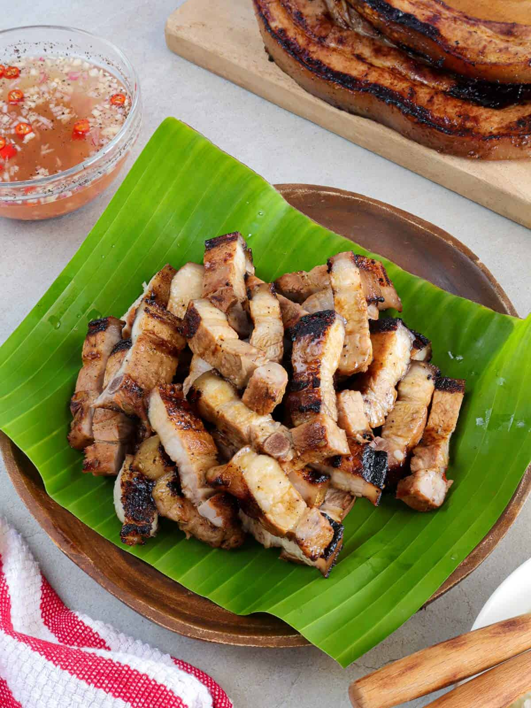
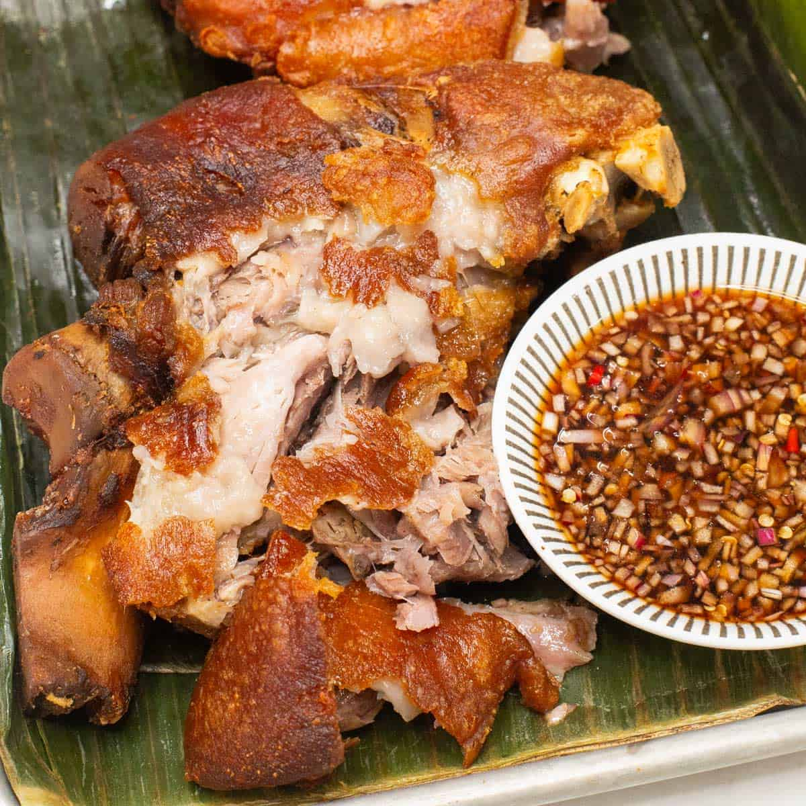

Lechon Kawali
Ingredients:
- 1 kg pork belly
- 2 tbsp salt
- 1 tsp black pepper
- 4 cups water
- Cooking oil for frying
Instructions:
- Boil pork belly with salt and pepper until tender.
- Dry and deep-fry until golden and crispy.
Season: Perfect for festive occasions like Christmas and New Year.

Caldereta
Ingredients:
- 1 kg beef or goat meat
- 1/2 cup tomato sauce
- 1/2 cup liver spread
- 1 cup vegetables (potatoes, carrots, peas)
- 2 cups water
Instructions:
- Sauté garlic, onions, and meat until browned.
- Add tomato sauce, water, and liver spread. Simmer until tender.
- Add vegetables and cook until done.
Season: Ideal for cooler months like November to February.

Inihaw na Liempo
Ingredients:
- 1 kg pork belly slices
- 1/4 cup soy sauce
- 2 tbsp calamansi juice
- 1 tsp black pepper
Instructions:
- Marinate pork belly in soy sauce, calamansi, and pepper for 1 hour.
- Grill over charcoal until fully cooked.
Season: Best during summer for outdoor grilling.

Chicken Tinola
Ingredients:
- 1 kg chicken pieces
- 1 green papaya, sliced
- 2 cups malunggay leaves
- 1 onion, sliced
- 6 cups water
Instructions:
- Boil chicken with onions and ginger until tender.
- Add papaya and malunggay leaves. Simmer until cooked.
Season: Perfect for rainy or cold evenings.

Crispy Pata
Ingredients:
- 1 whole pork leg
- 1/4 cup salt
- 1 tsp peppercorns
- Water for boiling
- Oil for frying
Instructions:
- Boil pork leg with salt and peppercorns until tender.
- Dry and deep-fry until crispy.
Season: Ideal for celebrations and festive gatherings.

Pinakbet
Ingredients:
- 1/2 kg mixed vegetables (okra, eggplant, squash)
- 1/4 kg pork belly, diced
- 2 tbsp bagoong (shrimp paste)
- 1 onion, chopped
Instructions:
- Sauté pork belly with onions and garlic.
- Add vegetables and bagoong. Simmer until vegetables are tender.
Season: Great year-round, especially during harvest season.